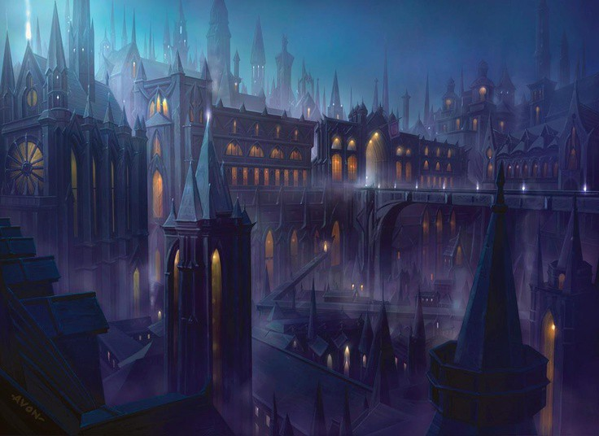

World of Ravnica
corria por grandes corredores vazios, separado(a) de seu capitão indo em direção ao som da rebelião. Enquanto corria pelo chão de mármore de Ravnica,
se depara com uma senhora ferida, jogada no chão, ensanguentada.
Seria a hora de um ato de heroísmo?
